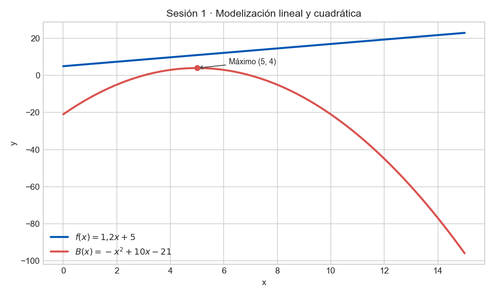

Ejercicio 1 (Modelado)
Una empresa de transporte cobra una base fija de 5€ más 1,20€ por cada kilómetro recorrido.
a) Escribe la función que relaciona el coste con la distancia.
b) Representa la función y explica qué significa la pendiente.
Solución: \(f(x)=1{,}20x+5\). La pendiente \(1{,}20\) representa el coste adicional por cada km.
Ejercicio 2 (Práctica)
\(B(x)=-x^2+10x-21\), donde \(x\) es el número de años desde la apertura.
Determina en qué año el beneficio es máximo y cuál es.
Vértice: \(x=\frac{-b}{2a}=\frac{-10}{2(-1)}=5\).
\(B(5)=-25+50-21=4\), es decir, \(400€\).
Ejercicio 3 (Práctica)
Calcula el dominio de \(f(x)=\frac{2x}{x-4}\) y \(g(x)=\sqrt{x-5}\).
\(Dom(f)=\mathbb{R}\setminus\{4\}\), \(Dom(g)=[5,+\infty)\).
Ejercicio 4 (Práctica)
Si se plantan 30 manzanos/ha, cada árbol produce 500 manzanas. Por cada árbol extra, la producción por árbol baja en 10 manzanas.
Escribe la producción total \(P(x)\), siendo \(x\) el número de árboles extra.
\(P(x)=(30+x)(500-10x)=-10x^2+200x+15000\).
f(x)=1.2x+5B(x)=-x^2+10x-21P(x)=(30+x)(500-10x)g(x)=sqrt(x-5)